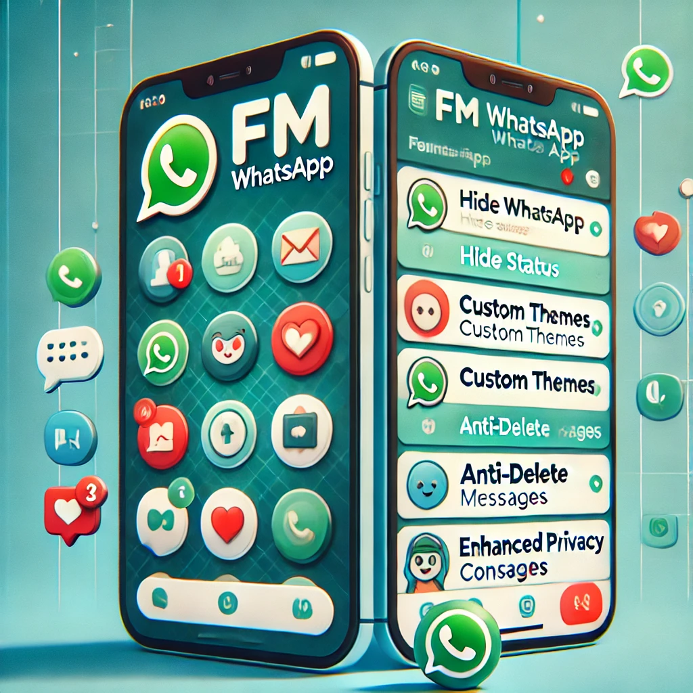

FM WhatsApp: Unlocking a World of Exclusive Features for Instant Messaging
In this digital era, messaging apps have become our lifelines. From texting friends to coordinating with colleagues, they make communication seamless and fun. Among the many instant messaging apps available, FM WhatsApp has emerged as a game-changer. It not only allows you to send and receive messages but also brings a host of unique features that can make your chatting experience truly one-of-a-kind.
If you’re tired of the same old green-themed interface and limited options on traditional apps, FM WhatsApp is here to rescue you. Think of it as the superhero of messaging apps—except it doesn’t wear a cape; it wears features!
With features like advanced privacy settings, customizable themes, and the ability to send large media files, FM WhatsApp enhances the user experience beyond what the original app offers. To fmwhatsapp download, simply visit a trusted source, download the APK file, and install it on your device. Make sure to enable installation from unknown sources in your phone’s settings for smooth installation. Once installed, you can enjoy all the enhanced features and a more personalized messaging experience!
1. Hide Status Like a Ninja
Ever wanted to go stealth mode while using your messaging app? FM WhatsApp lets you do just that. With its “hide status” feature, you can view your friends' stories or statuses without them ever knowing.
Imagine this scenario: your nosy friend posts a “cryptic” status, and you're curious to check it out but don’t want them to think you’re too interested. No problem! FM WhatsApp has your back. You can sneak in, see the status, and sneak out without leaving a trace. It’s like being a digital ninja!
This feature is perfect for those who value their privacy—or just want to avoid awkward follow-up conversations like, "Oh, I saw you viewed my status. Did you like it?"
2. Custom Themes: Give Your Chat a Makeover
Are you bored with the dull, default interface of traditional messaging apps? With FM WhatsApp, you can transform your chat screen into a vibrant masterpiece. The app offers a wide variety of custom themes to suit every mood, season, and personality.
Whether you’re feeling tropical, minimalistic, or just want a theme that screams "YOU," FM WhatsApp has got you covered. Plus, changing themes is so easy that you’ll find yourself experimenting with new ones every week. It’s like redecorating your digital home—minus the cost and effort!
And if you’re someone who loves to stand out, you can even create your own custom theme. Let your creativity flow and make your chat window as unique as you are.
3. Pin More Chats Than Ever
On regular messaging apps, you can only pin a limited number of chats. But let’s be real—who only has three important people in their life? With FM WhatsApp, you can pin up to 100 chats!
Yes, you read that right. A hundred! Now, you can keep your best friend, family group, work colleagues, and even your secret foodie squad all pinned at the top. It’s like having your favorites list on steroids.
No more scrolling endlessly to find that one chat you need. Everything important is right at your fingertips. Convenient, isn’t it?
4. Enhanced Privacy Controls
Privacy is a big concern in today’s digital world, and FM WhatsApp takes it very seriously. This app offers multiple privacy features that go beyond the basics.
For starters, you can hide the “typing…” indicator. So, if you’re one of those people who takes forever to craft the perfect reply, this feature is a lifesaver. No one will know that you’ve been typing, deleting, and re-typing for the past 10 minutes.
You can also freeze your last seen. This means you can check messages without anyone knowing when you were last online. It’s like being a ghost in the digital realm—visible only when you want to be.
5. Share Media Without Restrictions
Tired of your messaging app telling you, “File too large to send”? FM WhatsApp eliminates this headache. You can send media files up to 700MB without breaking a sweat.
Whether it’s a high-quality video, a folder of photos, or that hilarious meme collection you’ve been dying to share, FM WhatsApp makes it easy. No more resizing, compressing, or sacrificing quality.
And here’s the cherry on top: you can send over 90 images in one go. So, if you’re someone who loves flooding group chats with vacation pics, this feature is practically made for you.
6. Unique Emojis for Every Mood
Emojis are the lifeblood of online conversations. They add color, emotion, and humor to our texts. FM WhatsApp takes this to the next level with a wide range of unique emojis.
You’ll find emojis that you’ve never seen before on regular apps. Want to express sarcasm, excitement, or confusion in a fresh way? FM WhatsApp’s exclusive emoji library has got you covered.
It’s like discovering a secret stash of expressions that perfectly capture your feelings. And let’s be honest—who doesn’t love a good emoji war in the middle of a chat?
7. Anti-Delete Messages and Status
How many times has someone deleted a message before you could read it, leaving you filled with curiosity (or frustration)? With FM WhatsApp, those days are over.
The app’s anti-delete feature allows you to see messages even after the sender deletes them. The same goes for statuses. If someone posts something and takes it down, you can still view it.
It’s like having a time machine for chats—nothing gets past you! But hey, don’t abuse this power. Remember, with great power comes great responsibility (yes, Spider-Man fans, you know the drill).
8. Dual Accounts on One Device
If you’re juggling personal and professional lives, FM WhatsApp makes it easier by letting you use two accounts on the same device. No more switching phones or logging in and out.
This feature is perfect for entrepreneurs, freelancers, or anyone who wants to keep work and play separate. It’s like having two worlds in one app—efficient and hassle-free.
9. More Control Over Group Chats
Group chats can be a blessing and a curse. But with FM WhatsApp’s advanced group settings, you can have more control over who can message, what can be shared, and how the group operates.
You can even use the app’s custom features to create fun group nicknames, unique settings, and themed chat backgrounds for each group. Suddenly, managing group chats doesn’t seem so overwhelming, does it?
10. Updates That Keep Things Fresh
FM WhatsApp is constantly updated with new features and improvements. Unlike some apps that seem stuck in the past, this one keeps evolving to meet user needs.
Each update brings something exciting, whether it’s new themes, better performance, or even more privacy options. It’s like unwrapping a surprise gift every time the app updates.
Why FM WhatsApp Stands Out
In a world where most messaging apps offer similar features, FM WhatsApp dares to be different. It’s the app for people who want more customization, more privacy, and more fun in their chats.
Sure, it’s technically a modded version of WhatsApp, but that’s what makes it special. It takes the best parts of the original app and adds a sprinkle of magic (or, in this case, exclusive features) to create something extraordinary.
A Word of Humor Before We Wrap Up
FM WhatsApp is like that friend who always knows how to spice things up. It’s fun, quirky, and full of surprises. But remember, just like that friend, it’s best to use it wisely. After all, with features like anti-delete and hidden status, it’s easy to become the Sherlock Holmes of your friend circle.
So, if you’re ready to elevate your chat experience, give FM WhatsApp a try. Trust me, once you experience its unique features, going back to regular messaging apps will feel like trading your smartphone for a flip phone.